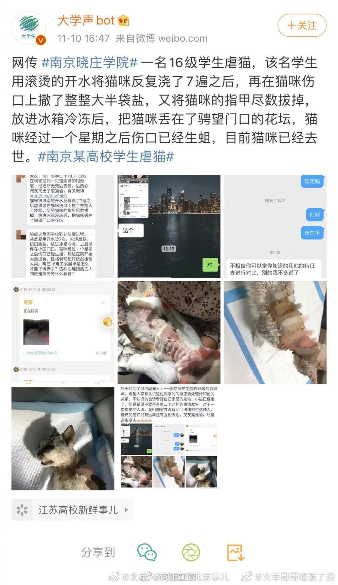

我这个回答有可能被骂（你为什么要女方先注意自己的行为？难道不是男方的责任吗？），但还是贴出来。

ETF拯救世界
2020-04-17
ETF拯救世界
2020-04-17
谁再在评论里说跌了仓位高了，涨了仓位低了难受就拉黑。
你不懂舒服。
你不懂舒服。
ETF拯救世界
2020-04-17
可以不喜欢，甚至可以吃，为什么要虐待。你大爷。
@北京人不知道的北京事儿:
网友投稿，那个#用高压电电击泰迪虐狗#的男子，就是去年4月用开水烫狗后“道歉”的南通大学实习医生陈昱龙！
他曾说自己是虐狗人士。他喜欢自制各种刑具虐狗，用开水烫、灌芥末、灌水、灌酒精、高压电电击、用火烧，当狗狗奄奄一息时，再用冷水泼醒，看狗狗痛苦的挣扎，他就会感到兴奋。。。
有些畜生就算道歉了也本性难改，这样的人未来进入社会成为医生，后果不敢想象。。。
#南通大学研究生被指再次虐狗##南通附属医院陈昱龙虐狗# （图5是他当时手写的道歉信。针对陈某龙再次被指虐狗一事，校方称尚无法确认此事，若事情属实，建议网友去派出所报案 ）
他曾说自己是虐狗人士。他喜欢自制各种刑具虐狗，用开水烫、灌芥末、灌水、灌酒精、高压电电击、用火烧，当狗狗奄奄一息时，再用冷水泼醒，看狗狗痛苦的挣扎，他就会感到兴奋。。。
有些畜生就算道歉了也本性难改，这样的人未来进入社会成为医生，后果不敢想象。。。
#南通大学研究生被指再次虐狗##南通附属医院陈昱龙虐狗# （图5是他当时手写的道歉信。针对陈某龙再次被指虐狗一事，校方称尚无法确认此事，若事情属实，建议网友去派出所报案 ）
- 
ETF拯救世界
2020-04-17
有打印的可能吗。现在墨仓式打印机打印成本很低了。
@新浪视频:
【心疼孩子上网课伤眼 #妈妈为孩子手抄课本试卷#用光20支笔芯】湖北洪湖，张同学是一名6年级学生，在家上网课时需要长时间看电子屏。妈妈担心孩子视力，就为儿子抄写了所需的所有课文、练习题和试卷，用光了20支笔芯。@一手Video  一手video的秒拍视频
一手video的秒拍视频
56万次播放
02:41
ETF拯救世界
2020-04-17
还不离婚吗。这以后晚上能睡踏实吗。
@新浪视频:
【妻子#把平底锅锁丈夫脚踝限制出门#】4月15日，青海西宁一男子睡醒后，发现右脚脚踝处有一把锁，锁上还挂着一口平底锅。该男子报警求助，消防员到场后，用破拆工具将锁取下。男子称，妻子和他吵架后，趁他睡着，用此方法限制他出门。@有料 有料的秒拍视频
424万次播放
00:52
ETF拯救世界
2020-04-17
今天公开品种有机会再收一网